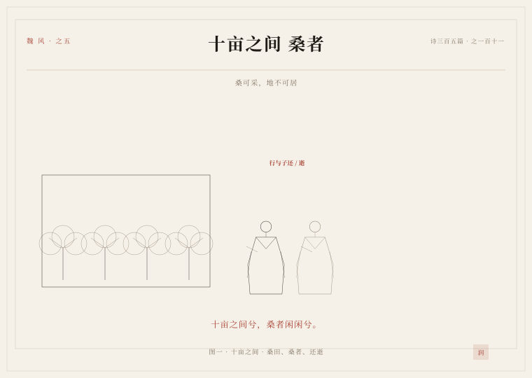

第一百十一篇 十亩之间
魏风 · 之五 SJ111
朗读 · 普通话
依经文原文朗读，章次不读出；配古琴底乐，不改速、不加拖腔。全库同一音色（豆包 TTS），非播音员录制。
一 解题
诗三判：
- 谁在说：魏国桑者。十亩之间采桑，十亩之外采桑；招呼同伴一并归去、一并逝去。
- 说什么事：二章只换间/外、闲闲/泄泄、还/逝。田有限，人将散；归不是闲，是退。
- 为何编在此：110 写行役盼归，111
写桑者相率去。国削民散，先从桑田上看见。
《毛序》：“《十亩之间》，刺时也。言其国削小，民无所居焉。”
朱子《诗集传》：“赋也。十亩之间，郊外所受场圃之地也。闲闲，往来者自得之貌。泄泄，犹闲闲也。还，归也。逝，往也。言其国削小，民无所居，故相率而去也。”
本库的看法：《十亩之间》是一首把“归”写成“退”的诗。
十亩之间、十亩之外，是仅有的一点桑田；闲闲、泄泄，是采桑者表面的从容。“行与子还”“行与子逝”，不是约伴回家，是相率离开。
断语：桑可采，地不可居；还与逝，都是退。
先辨五事：“十亩之间”是场圃之地，不是“十亩田亩”泛称；“闲闲/泄泄”是从容貌，不是“闲散/泄露”；“还”是归，不是“退还”；“逝”是往、去，不是“逝世”；“子”是同伴，不是“儿子”。
二 经文
第一章
十亩之间兮，桑者闲闲兮，行与子还兮。
第二章
十亩之外兮，桑者泄泄兮，行与子逝兮。
分章：二章，章三句。
三 韵读
- 一章：间、闲、还，元部；三字同收，句短而缓。
- 二章：外、泄、逝，月部；三字同收，句短而促。
读法：一章元部宽，二章月部促；宽处像闲，促处是走。
四 字义与名物
- 十亩：场圃之地；古代一夫授田百亩，十亩为其一隅。
- 间：其中；外：其外。
- 桑者：采桑的人。闲闲：往来自得之貌。泄泄：舒缓自得之貌。
- 行：将。与子：和你；子指同伴。
- 还：归。逝：往、去。
五 今译
十亩桑田之中，采桑的人从容往来，将要和你一起回去啊。
十亩桑田之外，采桑的人舒缓往来，将要和你一起离去啊。
六 章旨
- 一章：写“间”与“还”。十亩之内，尚可采；还，是归去。
- 二章：写“外”与“逝”。十亩之外，已无可采；逝，是离开。
- 总收：田越写越小，人越走越远；闲闲泄泄，都是退相。
七 诗教
- 赋：直陈桑田与采者；赋到“行与子”，退意自见。
- 观：观“国削小，民无所居”。十亩不是乐土，是仅剩之地；一读田园，就看不见削小。
- 群：桑者相呼；“与子”是同伴，也是同退；一群人走，才见国空。
- 怨：诗无怨，只有“还/逝”两个动作；怨在动作里，不在字面上。
八 分寸与边界
- 不可把“十亩”当普通十亩田。它是场圃之地；一读普通，削小就不见。
- 不可把“闲闲/泄泄”当悠闲快乐。它是自得之貌，也是无奈；一读快乐，全诗就成田园诗。
- 不可把“还”当退还。它是归；一读退还，句意就反。
- 不可把“逝”当逝世。它是往、去；一读逝世，全诗就成挽歌。
- 不可把“子”当儿子。它是同伴；一读儿子，相率而去就成家事。
九 存疑
- 诗旨：毛序“刺时，国削小，民无所居”；朱子同。本库从“相率去”读。
- “十亩”：毛传“十亩，场圃之地”；一说“十亩为一家之田”。从场圃，才与“国削”合。
- “闲闲/泄泄”：毛传“闲闲，往来者自得之貌”；“泄泄，犹闲闲也”。从自得，带无奈。
- “还”：毛传“还，归也”；一说“还，回旋”。从归。
- “逝”：毛传“逝，往也”；一说“逝，去而不返”。从往，留一线归意。
十 跨典
- 《论语·公冶长》：“道不行，乘桴浮于海。”——退而去；此诗“逝”字，同此一退。
- 《孟子·尽心上》：“穷则独善其身，达则兼善天下。”——退有其道；此诗之退，是地不可居。
- 《左传·昭公三年》：“民闻公命，如逃寇仇。”——民散之象；十亩之间，正是散之前一步。
- 《诗经·魏风·陟岵》：“犹来无止。”——110 盼归，111
已去；一盼一走，魏风收束。
十一 双卡与图
双卡八对：
| 十亩（场圃之地） |
十亩（普通田亩） |
| 间（其中） |
间（房间） |
| 闲闲（自得） |
闲闲（闲散） |
| 泄泄（舒缓自得） |
泄泄（泄露） |
| 还（归） |
还（退还） |
| 逝（往、去） |
逝（逝世） |
| 子（同伴） |
子（儿子） |
| 行（将） |
行（行走） |

图一 · 十亩之间 桑田、桑者、还逝
图二 · 十亩之间 还与逝
读图三处：
- 十亩：图一只画一块方田、几株桑、一条田埂；田小，才见“削小”。
- 桑者：两人背影，各提篮，不画脸；一前一后，是相率。
- “逝”在右：图二左“还”向内，右“逝”向外；箭头一出，退意就明。